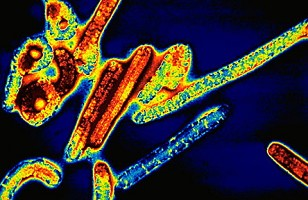
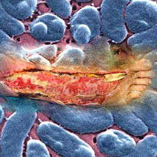
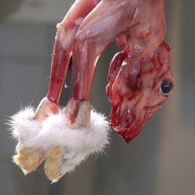
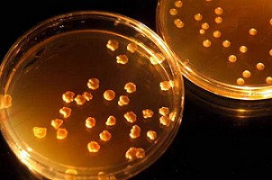

“伊波拉与噬肉细菌”
是肉食现世报
冯冯
加拿大第一大报“环球邮报”在一九九七年三月某日的世界新闻版巨大标题说：“伊波拉病毒发动全球攻势，威胁世界人类安全”，内文略谓：“根据联合国卫生署的新闻发布数年前曾经肆虐为害于非洲的病毒伊波拉，虽经各国力求控制，迄今仍未能获致防治之力，未有确实之特效药品可予扑灭，最近该种病毒更自行发生变异，产生强力的免疫力，不畏任何已知之抗生素，而且此种能力尽速传播全球，各地病毒均一致产生同样抗药能力，以致医药失灵，群医束手，病毒之来源，根据若干病毒专家推断，来自已腐烂之肉类，疑与英国较早爆发之疯牛症有关。患病者从不新鲜之肉类，尤其是牛肉，受到伊波拉病毒之感染，起先发生之症状为：呕吐、 腹泻、高烧、晕脑，甚至谵妄昏迷，病毒循血液循环与淋巴系统，一路侵噬，直到侵入脑内吃光脑细胞，病人乃致死亡，目前医药当无任何有效之特效新药可以救治，唯一可以预防之道，实乃戒绝食用不洁或腐烂不新鲜之肉类而已，一般预防医疗家咸认，最佳保健防病之力，仍是吃素。”
无独有偶，同年四月二十三日，加国报纸又刊载；“噬肉细菌大举侵害加拿大！”内文说：“本省（BC省）已发现一连数天之内发生六件食肉毒菌病例所害，均集中于兰里地带，此为去年维多利亚市区地带发生三起病例之继起病案，受此毒菌侵害之病人，受到毒菌噬吃肌肉，数小时之内，即可能被噬吃四肢殆尽，一、二日之内，即可能被吞噬全身，只剩下皮包骨头，终致死亡！情状可怖，有如电影之恐怖血肉淋淋之腐尸！”
按：此种噬肉毒菌症（根据病菌及病毒研究专家之报告，来源可能是不洁的家畜肉类受到感染，亦可能来自其他家畜，至今仍无任何药品可予控制，患病者若及早发现，唯有割除感染之身体或四肢，以防蔓延全身，否则在数小时之内，毒菌即可能噬害了全身！此种细菌，与噬吃尸体之细菌相似，但较之更为可怖，噬肉能力更强更迅速，一般腐尸细菌须得数月始吃光尸体，但此种生噬人体之细菌，只消数小时至十多小时即可噬吃人体全身，诚为恐怖。卫生当局发出警报，警告民众尽可能避免服用来源不明之不洁肉类。因为迄今研究仍以肉类为最可观之来源，民众若有发现四肢或身体突然急剧消瘦成为干皮包骨，须立即就医，若经证实是噬肉细菌感染，须紧急切除患处，以挽救生命，不可自误！
加拿大东部古壁省现任省长，前年在大搞脱离加拿大独立之际，突然感到一腿麻痹不能动弹，几小时之内突然消瘦成为干皮包枯骨，经紧急送医诊治，发现是噬肉细菌，当即开刀切除此腿，幸而保存生命得以策杖竞选，获选为省长，至今乃在大搞独立未休，此为著名之噬肉菌病例之一，法高喜食蜗牛，末知是否与蜗牛有关。
香港报刊新闻说港台均发现一种新型危险病毒，进入人脑，引起病人之精神失常甚至死亡，初步研究病毒来源可能是家禽及家畜之肉类沾染了其粪便的病毒，尤以鸭子带菌及病毒为多，爱吃鸭子或鸡肉者，各须注意提防。
 我又记得那一件卤牛肉中毒命案，有一个青年嘴馋，时常去买卤牛肉卤猪肚解馋，有一次，吃了卤味之后，肚子剧痛，上吐下泻发高烧，全身抽筋痉挛，家人又不懂得立即送医院洗胃，以为只是小事，到第二天病情恶化，病人已经昏迷才送院急救，在急救病室外打电话来间吉凶，我答以情形不妙，后来当夜病人就死了，这是病人吃了不新鲜的卤肉而中毒的命案，病家都埋怨我不肯运用神通去救他，我有什么神通？怎能救命？人须自救，别去吃肉就是自救！佛教叫人吃素，有两个主要理由：（一）戒杀生，勿作孽；（二）保健保命养生；其实第（二）项对人来说更加重要，不吃肉，是为了自己健康没病，延年益寿，吃素的最大功德还是迥向给自己，便宜不了别人，不吃肉不吃荤，至少可以减少了高血压、心脏病、中风等等疾病的机会，得益的还是自己，这些可以不是我一个人乱说，现代医学与营养学家，大多数都在提倡吃素，西方社会的年青人也有很多吃素，却不是因为信佛吃素，只是为了保健养生吃素，这样，无形中也积下了不杀生的功德，不管信佛与否，都是有功德的，预防疾病的方法，最重要的一环，就是“吃素”！
一位朋友的爸爸，每餐无肉不饱，一向不吃青菜水果，结果他患了高血压，时常进出医院，终于有一次在住院检查次夜，突然死了，死因是急性肺炎，急性肺炎是几个小时就会致死的。这位老伯，才不过五十多岁，本来无大病，只是高血压，未必会死，他却说，缴交了那么多的医保费，不多去看医生不多住医院未免太吃亏了，所以他喜欢住院享受护士小姐的伺候，那一次住院检查，医生说他没事，叫他次日回家，怎料当夜感染了院内的急性肺炎病毒，也没人注意到，他到半夜就突然死了，所以我说，医院有千千病毒千千病菌，不能算是厚诬，可能全世界的医院都不例外，最好就是少住医院少看医生为妙！这不是扯医生的后腿，也不是拆医院的招牌，道高一尺，魔高一丈，医生与医院的消毒药剂，连同抗生素，怎斗得过每一秒钟都在产生变异增强抵抗力的病毒与病菌？它们在温哥华医院所产生的抗药能力，不消几小时，就会传播讯息到东京、伦敦、台北，并非我向壁虚构，这些发现实在是从美国医学月刊上看到的。病毒与病菌具有传递讯息的“奇异功能”，万里可达于刹那之间，科学界早已发现，但至今仍末能解答谜底了，微生物如病毒也有“传心”神通，通知同类于万里之外，怎样发展突变来对付新出的抗生素或其他药品，科学已有证明，但是，您若说人类有传心术什么的，不被人骂您是“妖邪”才怪！
出处：天华月刊
原载《佛网》网站
2000 年 ── 2002 年